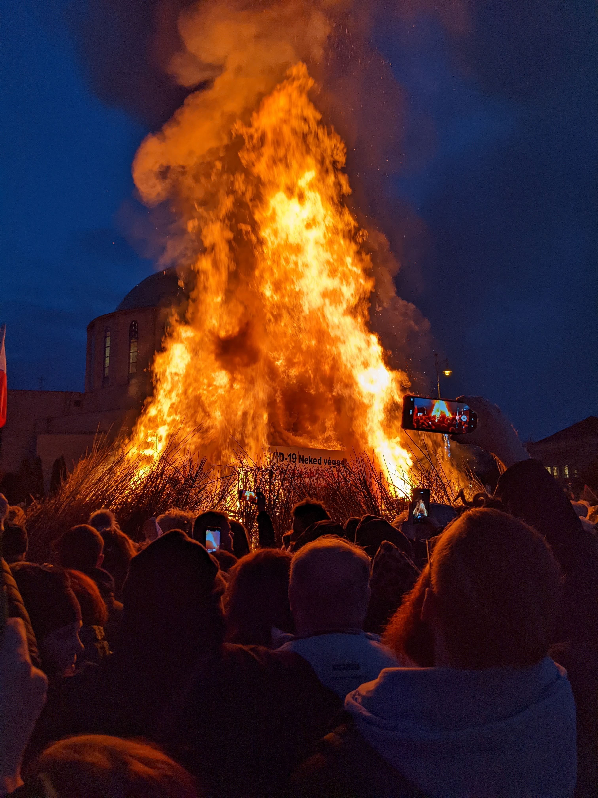

Week of 20 FEB 2022
Week 6 in Hungary

The Busójárás ends in a massive fire to scare off winter and burn off sins.
This past weekend I travelled with a few of my fellow classmates to the Southern Hungarian town of Mohács in order to experience the Busójárás Festival (“walking of the Busós”, roughly). We were led by a local Hungarian historian and cultural guide, Emese, who we had met through the Babilon Survival Hungarian course. Growing up in Hungary, she had travelled to the Busójárás Festival many times, and was able to help us get the most out of it despite the very large crowds.
Mohács itself is a relatively small town of roughly 18,000 people, and is known for this festival. Historically, Mohács has seen two major battles – the first which allowed the Ottoman empire to begin their invasion of the kingdom of Hungary and another many years later that spelled out the end of the same Ottoman invasion. The story behind the creation of the Busós is rooted in two things, the most popular and most common of which is this second battle. As the story goes, the Ottoman Turks had occupied Mohács and pushed its people out of their homes and into the swampy, marshy countryside surrounding the city. One dark night, an old Croatian man appeared from the swamp (Mohács is very close to the modern Hungary-Croatian border). The man told the people not to fear, that one day soon they will have their homes back. He instructed them to carve demonic masks and create weapons with the wood around them, and then to wait until another stormy night when a masked knight will arrive and lead them to retake the city. Then, the old man was gone. The people followed the orders and not long after, a stormy night came and the masked knight arrived. Armed and masked themselves, they rowed across the river Danube back into the city and began running through the streets making as much noise as possible to frighten the Ottomans. Upon seeing this sight, the occupying force thought they were under attack by actual demons, and fled the city. As a result of their success, the people decided to commemorate this victory by putting on a once-yearly festival to dress once again as Busós walk throughout the city.
This festival is also said to have been created as a way to scare away winter itself rather than the Turks. This influence is still apparent as the main day of the festival, Sunday, culminates in the burning of a large bonfire in the town square with a coffin on top that symbolizes winter. The majority Catholic influence can also be seen in this festival as the bonfire is said to double as a symbolic way to burn off sins in preparation for Lent, and the final day of the festival coincides with Fat Tuesday.
One of the most curious parts of this festival that was somewhat uncomfortable to witness was the tradition of the Busós messing with women. Busós would come up behind women who were not paying attention and grab them around the waist, dump baby powder on their heads, and/or cover them in chicken feathers. Emese had warned us that this would be the case, that it was simply “a part of the culture”. Through my observations at the festival, this did appear to be the case as all of the women who I witnessed getting bothered by Busós seemed to either take it in stride or simply tell the Busó to go away (in which case most Busós did so). This is certainly not something that would be ok to occur in the states nowadays, but was a clear indicator of deeply-rooted gender inequality.
Despite the strangeness of witnessing the above, the festival was a wonderful experience overall and allowed me a window into the living traditions of the Hungarian people. I hope to be able to seek out more events with this level of cultural significance in the near future.